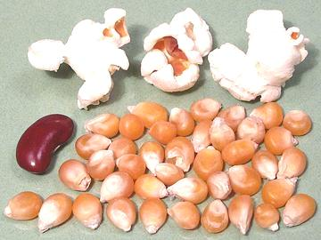

Popcorn

[Zea mays var averta]
Popped corn was known to the native population of the Americas for
thousands of years, in fact popping may be the way the grass ancestral
to corn was originally prepared for eating. A hard "flint corn" variety
is used, dried to the right moisture content. To pop it, it simply needs
to be heated by some means until the internal steam pressure builds up
and explodes the hull. The starch within has become gelatinized, but
upon expanding it solidifies into a foam. The photo specimens were from
Turkey, purchased at one of the local multi-ethnic markets in Los
Angeles. The kernels were about 0.33 inches long, and popped very well.
Popcorn is often caramel coated, but this adds a lot of sugar to an
otherwise healthy low calorie snack. Popcorn sold by movie theaters is
horrifyingly calorie intensive. It's popped in coconut oil, which is not
a big problem, but then it's saturated with melted butter, margarine
and/or who knows what else. A small movie popcorn is likely to contain
as much fat as three Big Mac hamburgers. Popcorn purchased pre-popped
in bags is likely to be high in trans fats or, even worse, the
interesterified fats increasingly used for "trans fat free" processed
foods.
More on Corn.
Buying & Storing:
Corn for home
popping is sold in most markets in North America. Of course there are
"gourmet" varieties available on the Internet, and they come in various
colors, but the popped corn will still be the same color as from yellow
corn.
Popping corn is sold in two basic varieties:
- Plain: for kettle popping, generally sold in plastic bags.
- Microwave: bagged with other ingredients (including salt, fake butter
flavor and trans fats or worse) for popping in the microwave oven. This
is now the most common form in North America.
- Be aware: the artificial butter flavor, diacetyl, used in microwave
popcorn can cause sever and unrepairable lung damage, and it might
contribute to Alzheimer's disease (uncertain at this point). If you
use this stuff, avoid breathing the vapors.
Popcorn should be stored in a sealed airtight container, away from
heat and light, and for less than a year as it will not expand well if
it becomes too dry.
Equipment:
Many varieties of home popcorn poppers are
sold. The Lehman's Stainless Stovetop Popper (US $54.95) is a highly
regarded traditional popper, but I've found no special popper at all
is needed, and I don't have the storage space for one anyway.
Cooking:
Here's how I do popcorn:
- I use my 5-quart stainless sauce pan with thick aluminum slab bottom.
I put in about 2T olive oil (pure or pomace, not virgin).
- Stir in 1/2 cup of popcorn so its well coated. It should be all in
one layer.
- Put on the lid and heat the pot over moderately high flame. Shake it
now and then. Popcorn heated too slowly or too quickly will not pop
well.
- When you start hearing popping, turn the heat down a bit (it should
never smoke, but you will see steam escaping). Shake it back and forth
a couple more times until the popping pretty much stops.
- You should now have a large bowl of perfectly popped corn, and if
your corn was good there should be very few unpopped "old maids". Most
of the oil will still be in the pot, coating bottom, sides and lid.
- Season as you desire. You'll probably want at least a sprinkle of
salt (it coats better if you grind it to powder in your spice grinder).
Melted butter is also a popular addition but adds a lot of calories.
gr_cnpopz 100219 - www.clovegarden.com
©Andrew Grygus - agryg@clovegarden.com - Photos on this
page not otherwise credited are © cg1 -
Linking to and non-commercial use of this page permitted